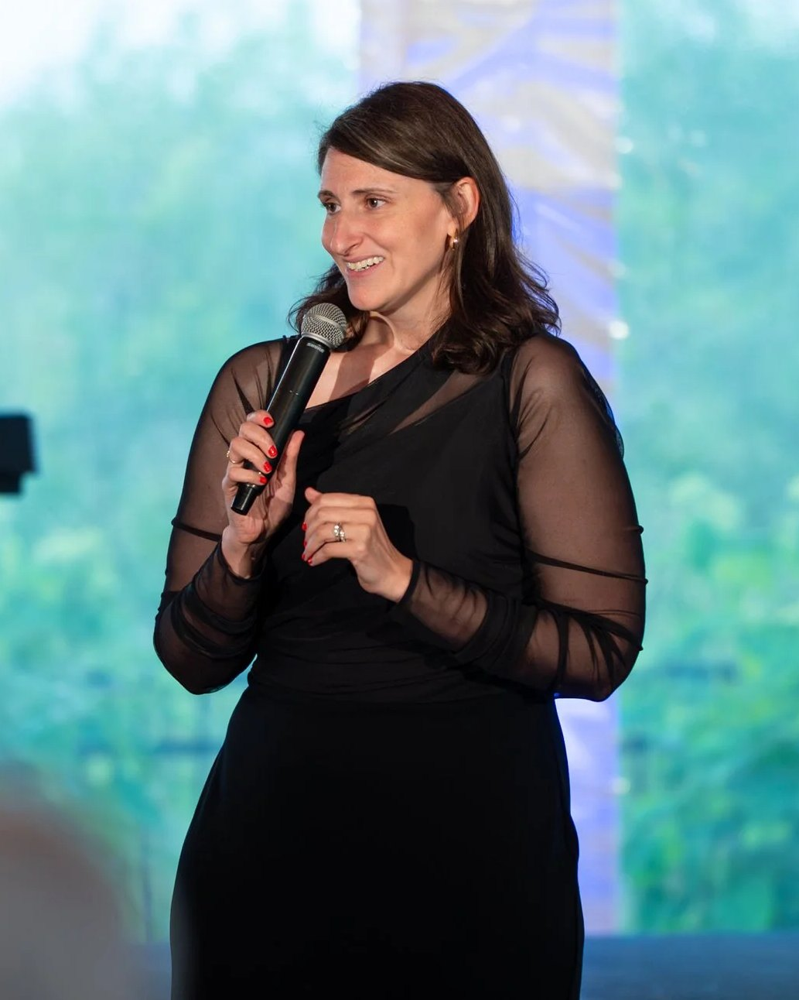

Mornings With Mary
Brew a cup of coffee and pull up a chair.
Join Opera Saratoga General and Artistic Director Mary Birnbaum for a monthly online conversation with singers, directors, designers, and other guests from the world of opera. Hear how productions come together and get a look at what’s ahead for the Summer Festival.
Next Conversation
Wednesday, December 16, 2026
9–10 a.m. Eastern · Online

Upcoming Conversations
Conversations run 9–10 a.m. Eastern, online, unless a session notes otherwise. Guests are announced as they’re confirmed.
Past conversations
Meet Your Host
Mary Birnbaum was named Opera Saratoga’s General and Artistic Director in February 2023, after a national search.
She has focused on revitalizing the company’s education program, bringing opera to more than 30 schools and venues in the region, and expanding Songs by Heart. Her work also emphasizes access, with free programming for kids, collaborations with local artists, and works by living composers.